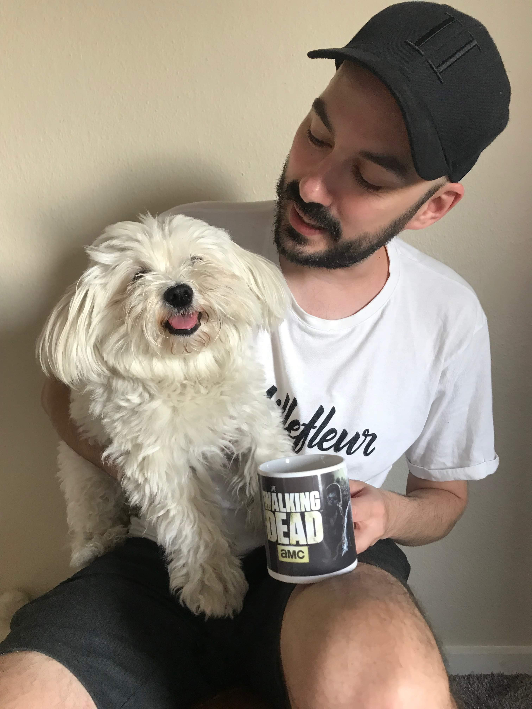

Mit navn er Daniel Dalby, jeg er 36 år og er født og opvokset i Valby hvor jeg stadig bor sammen med min kæreste og vores hund. Til dagligt studerer jeg multimediedesign på KEA og starter i 2020 på 2. semester. Min passion ligger i at arbejde med andre folk som et team og jeg er drevet af at hjælpe mine medstuderende hvor jeg kan. For mig er det vigtigt at folk godt kan lide at være på studiet og det skal ikke føles som slavearbejde, men tværtimod som at lave det man elsker. I 15 år har jeg kæmpet med panikangst og en af mine helt store måder at hjælpe mig selv på, er ved at hjælpe andre. Dette er min måde at bevise over for mig selv at jeg er god nok og jeg gør alt hvad jeg kan for at afspejle min personlighed i mit arbejde. Derfor har jeg bl.a. også lavet en eksamenshjemmeside som blev delt med mine medstuderende op til 1.semesters eksamen
Da jeg var yngre arbejdede jeg på Aller Press som picollo på Ude & Hjemme og har igennem starten af 2000'erne arbejdet på forskellige kontore som både picollo og IT-medarbejder. Jeg har også arbejdet som elektriker hos Kemp & Lauritzen hvor jeg bl.a. har arbejdet i forsvaret og lavet deres sikring af alarmer osv, og var med fra start til slut da operahuset blev bygget.
På hobbyplan har jeg siden 2013 elsket at kode hjemmesider og har arbejdet med en del webshops gennem Wordpress. Elsker at kode fra bunden af og jeg elsker at være kreativ. Dog har jeg aldrig været super-specialiseret i noget inden for webudvikling, men jeg finder det yderst interessant.
Jeg er stor fan af at kode, men min passion ligger faktisk inden for UX-arbejde og det er der jeg kommer til at specialisere mig. Jeg elsker at arbejde med data og brugerundersøgelser og elsker at gøre hele processen af brugeroplevelsen en del af mit arbejde.
HTML, CSS og Javascript
Photoshop
Illustrator
Adobe XD
Premiere Pro
Audition
Farvelære og Design Komposition